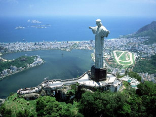
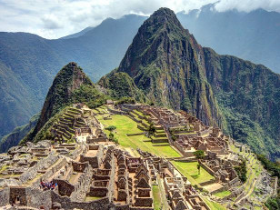
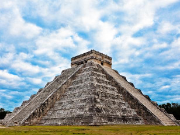
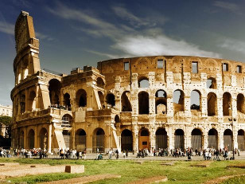
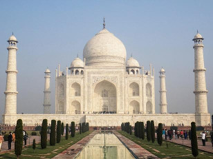
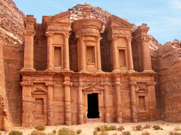

|
Name
|
Photo
|
Info
|
Location
|
| Great Wall of China |

|
Built between the 5th century B.C. and the 16th century, the Great Wall of China is a stone-and-earth
fortification created to protect the borders of the Chinese Empire from invading Mongols. The Great Wall is
actually a succession of multiple walls spanning approximately 4,000 miles, making it the world's longest
manmade structure. |
China |
| Christ the Redeemer Statue |
 |
The Art Deco-style Christ the Redeemer statue has been looming over the Brazilians from upon Corcovado
mountain in an awe-inspiring state of eternal blessing since 1931. The 130-foot reinforced
concrete-and-soapstone statue was designed by Heitor da Silva Costa and cost approximately $250,000 to build -
much of the money was raised through donations. The statue has become an easily recognized icon for Rio and
Brazil. |
Rio de Janeiro |
| Machu Picchu |
 |
Machu Picchu, an Incan city of sparkling granite precariously perched between 2 towering Andean peaks, is
thought by scholars to have been a sacred archaeological center for the nearby Incan capital of Cusco. Built
at
the peak of the Incan Empire in the mid-1400s, this mountain citadel was later abandoned by the Incas. The
site
remained unknown except to locals until 1911, when it was rediscovered by archaeologist Hiram Bingham. The
site
can only be reached by foot, train or helicopter; most visitors visit by train from nearby Cusco. |
Peru |
| Chichen Itza |
 |
The genius and adaptability of Mayan culture can be seen in the splendid ruins of Chichen Itza. This
powerful
city, a trading center for cloth, slaves, honey and salt, flourished from approximately 800 to 1200, and acted
as the political and economic hub of the Mayan civilization. The most familiar ruin at the site is El Caracol,
a
sophisticated astronomical observatory. |
Yucatan Peninsula, Mexico |
| The Roman Colosseum |
 |
Rome's, if not Italy's, most enduring icon is undoubtedly its Colosseum. Built between A.D. 70 and 80 A.D.,
it
was in use for some 500 years. The elliptical structure sat nearly 50,000 spectators, who gathered to watch
the
gladiatorial events as well as other public spectacles, including battle reenactments, animal hunts and
executions. Earthquakes and stone-robbers have left the Colosseum in a state of ruin, but portions of the
structure remain open to tourists, and its design still influences the construction of modern-day
amphitheaters,
some 2,000 years later. |
Rome |
| Taj Mahal |
 |
A mausoleum commissioned for the wife of Mughal Emperor Shah Jahan, the Taj Mahal was built between 1632 and
1648. Considered the most perfect specimen of Muslim art in India, the white marble structure actually
represents a number of architectural styles, including Persian, Islamic, Turkish and Indian. The Taj Mahal
also
encompasses formal gardens of raised pathways, sunken flower beds and a linear reflecting pool. |
Agra, India |
| Petra |
 |
Declared a World Heritage Site in 1985, Petra was the capital of the Nabataean empire of King Aretas IV, and
likely existed in its prime from 9 B.C. to A.D. 40. The members of this civilization proved to be early
experts
in manipulating water technology, constructing intricate tunnels and water chambers, which helped create an
pseudo-oasis. A number of incredible structures carved into stone, a 4,000-seat amphitheater and the El-Deir
monastery have also helped the site earn its fame. |
Jordan |